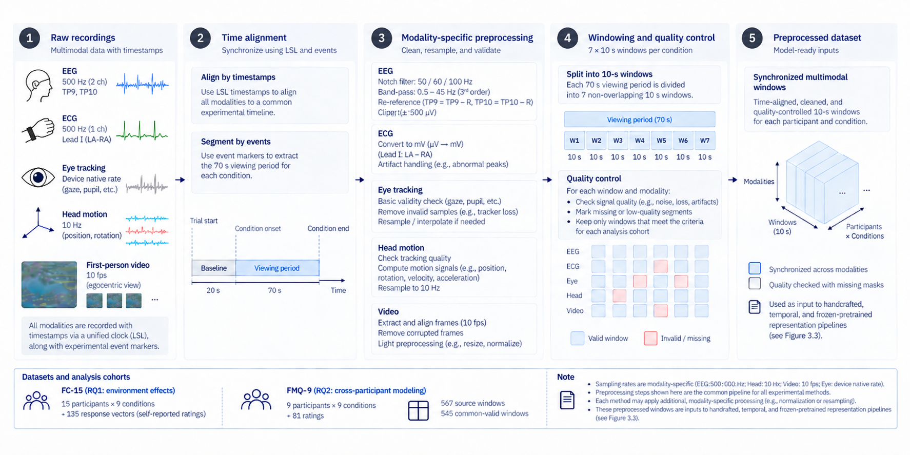
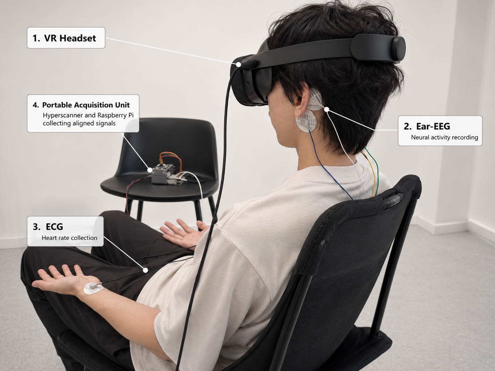
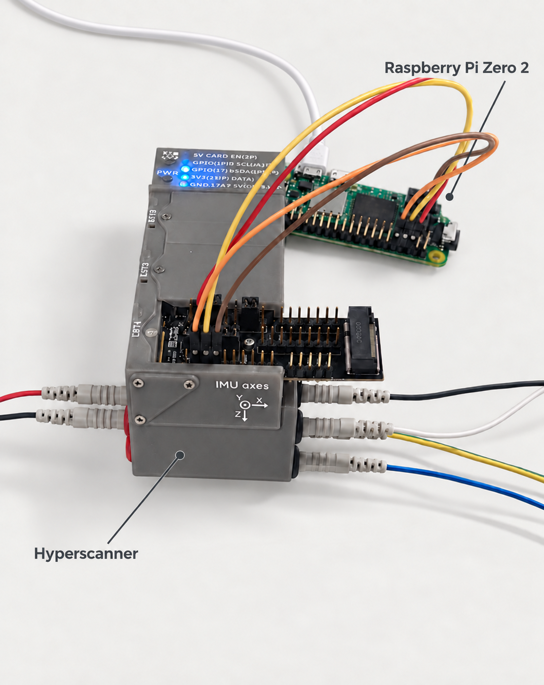
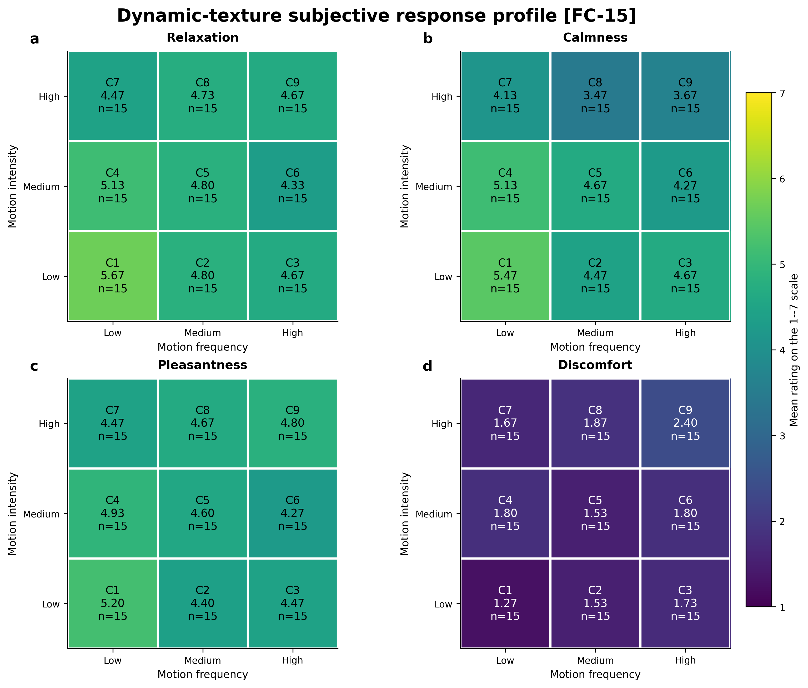
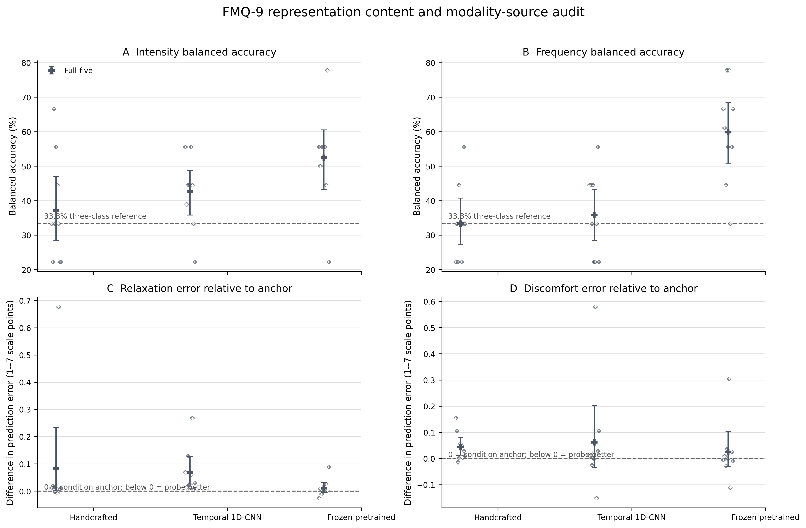
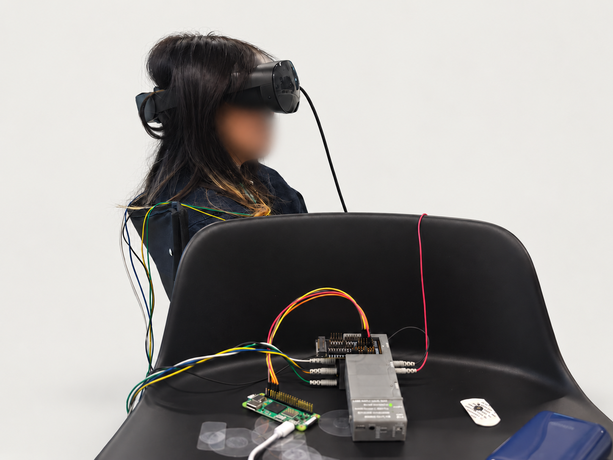
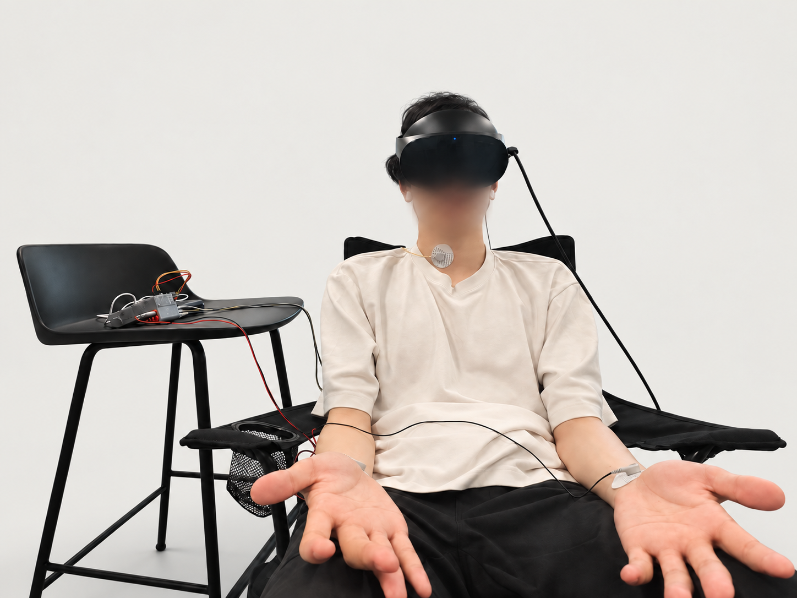
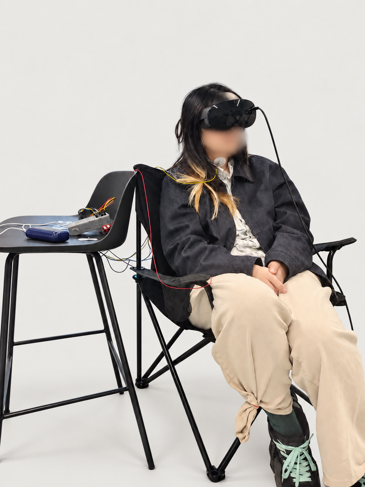

XR · MSc thesis · 2026
Toward Adaptive VR for Relaxation: Exploring Multimodal Sensing and User-State Prediction
A thesis investigating what adaptive VR would need to know before changing a relaxation experience for someone it has not seen before.

Role
Thesis researcher · study design, implementation, analysis
Setting
Aarhus University · Computer Science
Signals
EEG, ECG, eye tracking, head motion, first-person rendered XR video
Supervisor
Status
MSc thesis · completed exploratory study
01Overview
Adaptive VR relaxation depends on two links: a visual experience must expose parameters that can be changed meaningfully, and the system must estimate how a new person responded to them. This thesis examines both links through a point-cloud rendering of Monet’s Water Lilies.
The first study maps how motion intensity and frequency relate to relaxation, calmness, pleasantness, and discomfort. The second asks whether synchronized physiological, behavioural, and rendered-scene recordings can estimate an unseen participant’s post-exposure response without personal calibration. The work evaluates prerequisites for adaptation; it does not claim to be a finished adaptive controller or a clinical intervention.
02Motivation
Through this project, I became increasingly interested in the gap between a system knowing what it has shown and knowing what that experience meant for a particular person. A motion parameter can be controlled precisely, but the same setting may feel calming, boring, demanding, or uncomfortable to different users.
That distinction shaped the thesis. Rather than treating any measurable signal as a direct readout of relaxation, I used the known stimulus condition as a reference and tested whether multimodal recordings added reliable information about an individual response.
03Approach
I implemented the Unity stimulus as an animated point cloud whose motion intensity and frequency could be controlled independently. During each exposure, the pipeline synchronized EEG, bipolar wrist ECG, eye tracking, head motion, and the headset’s first-person rendered video on a shared Lab Streaming Layer timeline.
Fifteen participants rated nine intensity–frequency conditions. For the response-estimation study, I evaluated the nine participants with all five modalities in a strict leave-one-participant-out setting. The comparison covered handcrafted summaries, a temporal model, and frozen pretrained representations, with the downstream models held to the same fold-local protocol.

04Hardware setup
The physical setup combined a head-mounted display with a portable physiological acquisition unit. The Hyperscanner handled the electrophysiological recording path, while a Raspberry Pi Zero 2 supported the compact acquisition and synchronization setup shown here. The headset supplied the visual scene, eye tracking, head pose, and first-person rendered video; Unity events marked the condition timeline for later alignment.
The Hyperscanner project at Aarhus University ↗ is a modular platform for multimodal biomedical acquisition. Its low-noise analog front-end, extensible sensing boards, and embedded computing support make it a useful foundation for synchronized EEG, ECG, and other physiological measurements.


05Contribution
My contribution was to connect the stimulus, sensing, and evaluation layers into one traceable study:
- Built the stimulus. I implemented the Unity point-cloud rendering of Water Lilies, with motion intensity and frequency controlled as separate parameters.
- Established the study pipeline. I set up synchronized collection of EEG, ECG, eye tracking, head motion, and first-person rendered XR video, including event markers and modality-specific quality checks.
- Ran the analysis. I carried out the participant-aware statistical models and the multimodal comparisons, using held-out participants, fold-local processing, and correction procedures that keep repeated measurements from overstating the evidence.
- Defined the interpretation boundary. By comparing each model with a condition-only reference, I separated recovery of the rendered stimulus from recovery of an individual’s response to it.
06Findings
The thesis gives a partial answer: the stimulus could be characterized within this case, but calibration-free estimation of an individual response remained unresolved.
- Motion affected different parts of the experience. Within the tested Water Lilies grid, higher intensity was associated with lower calmness and greater discomfort. Higher frequency was associated with lower relaxation and calmness. No reliable intensity–frequency interaction or pleasantness effect was supported.
- The known condition was a strong baseline. For an unseen participant, none of the tested representation or fusion choices reliably improved on the response predicted from the condition alone. This means the models did not yet provide dependable cold-start personalization.
- Representation complementarity remained limited. Across representations derived using conventional machine-learning features, deep-learning models, and frozen large-scale pretrained models, the tested modalities did not provide reliably complementary information for estimating individual responses. Multimodal fusion often failed to improve, and in some cases reduced, performance relative to the condition-only baseline. These results suggest that simply adding modalities or increasing representation complexity is insufficient; future work should focus on learning representations that capture user state and on aligning that state with stimulus context.
- Stimulus information was easier to recover than personal response. Frozen video representations identified rendered intensity and frequency at roughly 60% balanced accuracy, but this readable context did not translate into a reliable estimate of how the individual responded.
- ECG is a candidate, not a conclusion. It showed the clearest exploratory direction among the single modalities, but its small gains were uncertain. The study therefore points to a context-to-person gap rather than a finished adaptive controller.


07Reflection
The study did not produce a ready-made adaptive controller. It produced a clearer account of what is still missing: denser and time-aligned labels, repeated sessions, personal-calibration comparisons, and validation on new stimuli and conditions.
That outcome changed how I think about adaptive XR. The important question is not whether a model can find a pattern in a multimodal recording, but whether the pattern adds dependable evidence about the person at the moment a system is deciding what to do.
08Tech Stack
XR development
Unity, C#, Visual Effect Graph, and a parameterized point-cloud rendering of Water Lilies
Sensing & synchronization
EEG, bipolar wrist ECG, eye tracking, HMD motion, first-person XR video, and Lab Streaming Layer
Data & statistics
Python, signal processing, quality control, random-intercept models, and multiple-comparison correction
Modelling & evaluation
Handcrafted and learned representations, multimodal fusion, PCA, Ridge regression, linear probes, and leave-one-participant-out validation
Visual materials
09


